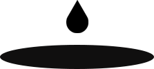

OVER VIEW
- 코로나 바이러스 (covid-19)가 전세계적으로 닥치면서 사람들이 외식하는 문화가 사라지고
- 집에서 배달을 시켜먹는 문화가 점점 자리잡았습니다. 동시에 배달 수요가 급증하면서 배달비
- 도 자연스럽게 치솟아 이제는 혼자서 시켜먹기에는 배달비가 부담스러운 시대가 왔으며 이러한
- 단점을 잡고 장점으로 만든 배달비 n분의1 앱입니다.
- 심플함
- 전체적인 디자인은 심플함에
- 중점을 뒀으며 깔끔함과
- 주목성을 높입니다.
- 접근성
- 누구나 쉽게 접근할 수있는
- 주제를 가지고 있으며,
- 사용법에 어려움이없습니다.
- 효율성
- 어플을 사용함으로써 비싸던
- 배달비를 비교적 저렴하게
- 이용할 수 있습니다.
PERSONA
- 이름 : 우영우
- 30세/웹디자이너
Needs
- “먹는 걸 좋아하지만 혼자 살면서 배달을 시켜먹기엔
- 배달비가 이만저만이 아니다. 배달비가 상승하면서
- 혼자 시켜먹기엔 너무 부담인데 같이 시켜먹을 사람
- 어디 없을까 ...?”
- 이름 : 권민우
- 30세 / 변호사
Needs
- “배달을 시켜먹고 싶지만 어디가 숨은 맛집인지
- 잘 모르겠다. 많이 시켜먹으면서 알아가기엔
- 돈이 너무 부담이 되는데 주변에 배달맛집
- 잘 아는 사람 없나 ...?”
LOGO
- 배달을 상징하는 오토바이 일러스트와 ‘TOGETHER’
- , ‘DELIVERY’의 합성어로 함께 배달을 시켜먹다라는
- 의미를 가지고 있습니다.
TYPHO GRAPHY
- 무겁게 폰트를 줘야하는 부분에서 각진 이미지가 아닌 둥글한 느낌의 ‘여기어때 잘난체’를 사용했고,
- 가볍게 소제목 등으로 활용해야하는 부분에서는 부드럽고 가독성이 좋은 ‘G마켓 산스체’를 사용했습니다.
- 여기어때 잘난체
- 가 나 다
- REGULAR
- G마켓 산스체
- 가 나 다
- LIGHT
- MEDIUM
- BOLD
COLORSYSTEM
- 음식 관련 앱이다 보니 포인트 컬러로 레드 계열 색상을 사용했습니다. 눈에 잘 들어올뿐만 아니라
- 생동감 또한 전달할 수 있습니다. 서브컬러로 그린계열과 폰트색상은 블랙 컬러를 사용했습니다.
- #f74730
- #39b34a
- #000000
- 